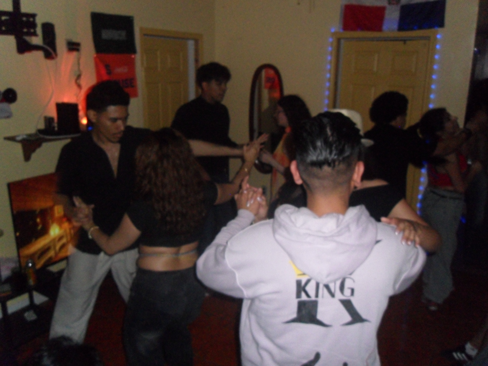
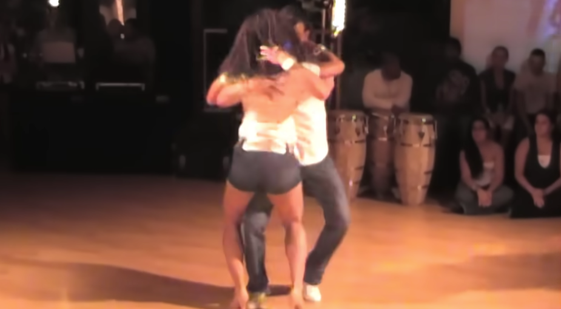
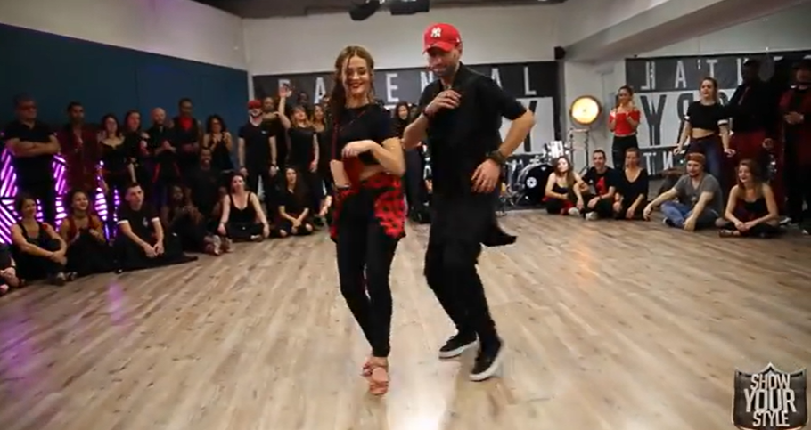

Born Bitter, Sold Sweet
There is a particular irony embedded in the story of bachata, and it grows more visible by the day. A music born in poverty, rejected by the powerful, and kept alive by the working class has become one of the world's most popular dance styles, complete with luxury hotel venues, $300 weekend passes, and international certification programs. There's no villain in particular to blame for these alterations, but rather this is the story of how capitalism transformed bachata into a product now sold back to the people who created it at a price many of them can no longer afford.
Bachata is, at its core, a unified cultural expression. It is the music of love, heartbreak, and infidelity, and it is dance, a language of connection and coordination. If you asked ten different bachata musicians, dancers, and enthusiasts "What is bachata to you?" their answers would vary wildly. Bachata researcher and teacher Adam Taub suggests that
"perhaps a deeper understanding of bachata will emerge if we let go of the need for a definitive definition,"— Bachata Researcher and teacher, Adam Taub

Essential to grasping the full picture on bachata though, is the acknowledgment that the music and dance are not separate disciplines, but rather a single expression that must be taken as a whole.That expression was born among the poor. Bachata emerged from the Dominican countryside and later developed in the shantytowns of Santo Domingo. The genre carries indigenous Taíno, African, and Spanish roots, reflecting the complicated diversity of the Dominican people and the lasting effects of colonization, slavery, and war. The original term used to describe the genre was musica de amargue, music of bitterness, and was also commonly referred to as musica cachivace, music of little worth. Among the upper and middle classes of Dominican society bachata became synonymous with delinquency, lack of education, and prostitution. As recently as the 1980s, bachata was considered too vulgar and musically rustic to be broadcast on Dominican television or radio.
Far from its stigmatized roots, bachata has become a global sensation. Today, bachata is recognized as an Intangible Cultural Heritage of Humanity, and serves as an emblem of community and cultural identity for the Dominican Republic. Its artists collect accolades, fill stadiums, and appear at the top of Global charts. Most notably, Latin artist Bad Bunny (while not primarily a bachata artist per se) headlined the Super Bowl Halftime Show in 2026, bringing the cultural sounds of Latin America to the largest Halftime Show to date.
From rejected to revered, the apparent ironies of the modern culture come to light. The people who once called it worthless now want in, and the people who created it are increasingly priced out of the room.
An Expression Born in the Cradle of the Americas
The story of bachata begins long before the Dominican Republic had earned its name. The Taíno people of Hispaniola, the island shared today by Haiti and the Dominican Republic, received an uninvited guest in 1492: Columbus. The encounter began cordially enough, but by his second voyage in 1494, Columbus had made his intentions clear, establishing the first Spanish colony of the New World and appointing his brother Bartholomew as governor of a land that was never his to govern. Bartholomew founded Santo Domingo in 1496. What followed was the systematic destruction of the Taíno people, over 400,000 enslaved, then slowly eradicated through forced labor, disease, and outright genocide. By the early 1500s, the Taíno labor force had dwindled so low that Spanish colonizers had begun importing enslaved Africans to replace the population they had destroyed. Three distinct peoples, Taíno, Spanish, and African, became the cultural foundation of what we recognize today as the Dominican people.

Before it was recognized as the cultural emblem it is today, bachata was simply what happened when poor Dominicans got together. The word itself originally referred to a backyard party, typically one with guitar music, singing, and dancing. Only later did it come to name the genre, and when it did, it was wielded as a slur.
Bachata had long existed informally in the countryside before Jose Manuel Calderon recorded what is generally recognized as the first bachata single. Guitar music like bolero and son were the staples of the countryside, introduced through the musical exchanges with Cuba. As these sounds took on a more unique form, shaped by Spanish, Taíno, and African influences, they came to be known as bolero campesino, a.k.a peasant bolero.
Rafael Trujillo, known for good reason as El Jefe, The Boss, ruled the Dominican Republic for thirty-one years and despised bachata. But his contempt was never simply a matter of taste. Trujillo, on the other hand, was an avid fan of merengue, a fellow Dominican music and dance form, which he declared the official national music in 1936. Trujillio used merengue as a political weapon, with his connections in the radio and broadcasting industry, he was able to flooding state-controlled airwaves with propaganda, commissioning songs written in his honor, and engineering a cultural monopoly that left no room for dissent.
The rise of bachata not only threatened the monopoly of merengue in the music industry that Trujillo worked so hard to establish, but the struggles and themes depicted in the music clashed with his vision of modern society. Trujillo's sentiment alone was enough to leave a lasting impact on the perception of this dance, but he really tried to dig bachata's grave by leveraging his control of the broadcasting industry, strictly enforcing censorship, which meant that bachata had to survive in the shadows.
It was only after Trujillo's assassination in 1961 that bachata had room to breathe. The loosening of migration restriction sent rural Dominicans en masse to Santo Domingo, and with the collapse of state control over the broadcasting industry, the music finally had a chance to spread. It was during this time that Jose Manuel Calderon recorded what is now recognized as the first official bachata singles, "Borracho de Amor" and "Que Sera de Mi (Condena)"
The sounds are both unmistakable of their time and strikingly familiar, you can hear the DNA of what bachata would become. But the anti-bachata sentiment of the Trujillo era did not vanish with the dictator. A single
radio station Radio Guarachita, hosted by Radhames Aracenta beginning in 1966, was the only outlet that dedicated itself to putting the music on air.
It wasn't until the early 1990s that bachata began reaching the international scene. Luis Vargas and Antony Santos were the first generation of pop bachata artists, modernizing the sound and expanding its audience beyond the Dominican Republic. In 1992, Juan Luis Guerra won a Grammy for Bachata Rosa, giving the genre its first taste of mainstream legitimacy and putting it on the international map.
Then came Aventura. A Bronx-raised, Dominican-rooted group, Aventura didn't just modernize bachata, they globalized it. Their 2002 single "Obsesión" topped charts across Europe, reaching number one in Italy for sixteen consecutive weeks, a remarkable feat for a genre that had struggled to get airtime in its own country just decades earlier.
The same music that couldn't get airtime on Dominican radio is now the cultural pride of the nation. What changed was not the music. What changed was who decided it had value.
The Map of a Migration
Bachata's geographic journey tracks almost perfectly onto the story of the Dominican diaspora. When Dominicans left, first in the wake of Trujillo's assassination in 1961, then in waves following the U.S. invasion of Santo Domingo in 1965 and the repressive regime of Joaquin Balague from 1966 to 1978, they brought their music with them. From the 1970s through the early 1990s, Dominicans became the largest group of immigrants arriving in NYC. Washington Heights was the landing point of Dominican emigration, and for decades became Bachata's second home. The music played constantly, from car windows to the back room at bodegas. Bachata producer "sP" Polanco says
"They wanted to feel like back home. For that reason, the music, the bachata, never evolved while in Washington Heights."— Bachata producer, "sP" Polanco
That evolution came when the Dominican epicenter shifted to the Bronx, a melting pot of African American, Caribbean, and Latin influences created an environment where creativity flourished, and new forms of art, music, and dance could take shape. The Bronx was the same place where, around the same time, hip-hop was born. First-generation Dominican immigrants and their children were in the middle of the bicultural tension between the bachata in Santo Domingo and the Hip Hop of the South Bronx, and a new genre was being formed. It was here that bachata would absorb the swagger of urban New York, and Aventura, the revolutionaries of the genre, would eventually emerge.
The music was not the only thing that evolved. The dance did too, and the way it changed tells you about where it's been, and where it's going.
Traditional bachata, the Dominican style, is the original. Footwork-heavy, and much more playful, this style is more responsive than routine. The dancers often display great musicality, playing with the rhythm and responding to the instruments instead of just running through long, memorized combos. Nobody signed up for a six-week beginner series; you learned at the family cookout, at a birthday party, watching your family. You were surrounded by it, and eventually your body understood it.
Bachata moderna took shape when the dance went abroad. Borrowing from salsa, ballroom, and other forms of partner dance, it traded spontaneity for structure. More turn patterns, more planned sequences, and more teachable combinations. It spread precisely because it could be taught, and what can be taught can be sold (foreshadowing). Because of this, if you were sign up for any generic bachata class today, this is the style you are most likely to be taught.

But within the Bronx, a very unique style formed, bachata urbana. Folding in the unique dance styles from hip-hop with their traditional roots, something new emerged. Urbana is the sound and movement of a generation raised between two worlds. As a quick aside, I think this video presents an exaggerated picture of what was realistically a more subtle influence of hip-hop on the style.

The Digital Moment
The story of Bachata's global rise would be incomplete without acknowledging the influence of the digital age. For decades, the genre traveled through physical proximity, much like an oral tradition, through small trios in the Dominican countryside, through the small radio stations that were bold enough to play it, and through migration. It flowed through Dominican communities in NY, slowly at first with cassette tapes passed hand in hand, then CDs, and eventually completely digitally. With the rise of digital streaming, media sharing, and social media sharing, the algorithm began doing what Radio Guarachita once did alone: finding an audience for music that might otherwise be missed.
The top 3 bachata artists on Spotify right now are Romeo Santos, Prince Royce, and Aventura. Romeo Santos, Aventura's lead vocalist and bachata's biggest solo star, currently draws 38.5 million monthly listeners on Spotify alone.
The Google Trends above does not measure how good bachata is, but rather when the world recognized it was.
Aventura was the first to grab the worldwide ear. In June 2009, search interest in the group hit its all-time peak, when the Bronx group released The Last, their farewell album before an extended hiatus. By that point, Aventura had already spent the better part of the past decade proving that bachata could fill arenas and playlists outside the Dominican Republic. The chart shows that the world had caught up.
Then came Romeo Santos in his solo era. Starting in late 2011, search interest in the group's lead vocalist began a sharp climb that would carry him past Aventura's peak within two years. His solo debut, Formula Vol. 1, revealed something the industry had not fully registered: that bachata's audience was not just loyal, it was growing, and it was growing in places that it had never sent a Dominican immigrant. By 2014, Romeo Santos was the most searched bachata artist on the planet by a significant margin.
Prince Royce tells a different story. His peak arrives in 2013 and 2014, riding the same wave, then gradually recedes, a reminder that the digital moment created multiple lanes, not just one. What the data makes clear is the shape of the transition: bachata did not go global all at once. It went in stages, carried by specific artists at specific moments, each one opening a door a little wider than the last. And somewhere between those two moments, bachata stopped being a diaspora secret and became an industry.
The Money Age of Bachata
Digital media not only opened the gateway to people's hearts, but their pockets as well. YouTube videos, TikTok reels, and the Instagram explore page act as marketing platforms for talent in the dance space. "For only $99.99, you can dance like me, too" (no one in particular, but you get the vibe). In the upcoming summer of 2026, a full experience pass to the Los Angeles Bachata Festival, went on sale for $200, with an at-the-door price of $310. This didn't even factor in hotel costs, travelling, etc., for this 3-day event. A complete "Ultimate VIP Festival Package" which grants access to all workshops, performances, socials, and a 3-night stay at the hotel rings up grand total just under a grand.
The numbers tell the story. In 2013, shortly before the peak of Romeo Santos' popularity, a single bachata event was registered on Danceplace, a digital platform and marketplace for the dance industry. By 2019, this figure had exploded to 54. Not only that, but the prices rose as well. While I wasn't able to find specific figures for the average full pass price of these events, recent trends suggest that these prices have been consistently increasing. The chart doesn't just show the sharing of culture, but institutionalization. A dance that used to be taught at family reunions in the Dominican countryside became an expensive commodity with fancy venues and expensive pricing. The dance born because of the poor now required a hotel reservation to access. While learning the art organically is not fully erased, the learning process, whether it be through classes, festivals, or the alike always has a price tag.
"We must recognize the processes of whitening, commodification, and standardization we help perpetuate every time we teach or take a class stripped of its historical and social context."— Wilfredo José Burgos Matos, Dancers Group / The Conversation, 2021
Scholar Wilfredo Burgos Matos traced how, by 2010, bachata had been absorbed into high-profile competitions like the World Latin Dance Cup, a standardization process that made the dance teachable, certifiable, and ultimately sellable at scale. Studio certifications. Online course bundles. Brand partnerships. The infrastructure of a cultural industry had quietly assembled itself around a dance that once needed no infrastructure at all.
The Wall They Built With the Music They Stole
The story of bachata is in no way a tragedy; if anything, it is an extraordinary triumph, a sound that survived dictatorship, survived elite contempt, survived being stigmatized as an art form beneath the attention of a civilized society, went on to fill stadiums all over the world, and earned recognition from UNESCO as a part of the irreplaceable cultural heritage of humanity.
Nonetheless, there is a particular kind of irony that history has produced. The Dominican upper class once dismissed bachata as a mark of cultural backwardness, something to be ashamed of, something to distance yourself from if you wanted to be taken seriously. Today, those same social strata pay hundreds of dollars to attend weekend festivals at luxury hotels, celebrating the thing their predecessors looked down upon.
From a stigma to a price tag, what had been lost in that transaction is harder to quantify than a ticket price alone. Bachata was never just a music or dance; it was a unified expression. It was how a community processed heartbreak, celebrated love, and held onto identity in the face of poverty and scorn. It was learned not in studios, but in living rooms, not from instructors but from grandmothers.
This isn't the full story, though. Community-run social dances still exist. Instructors who teach Dominican style and emphasize the cultural story still exist. The countryside still plays bachata without a cover charge and always will. The backyard patios and living rooms of Latin families still blast these tunes late into the night. The music did not forget where it came from, even if the festival circuit has.
But the next time you see a bachata festival at a luxury hotel, it is worth pausing to remember the people who laid the foundation for the dance floor you perform on. Trujillo tried to silence bachata by keeping it off the radio. Capitalism is doing something quieter, keeping it behind a paywall. Nonetheless, bachata endures, free in the places that matter most.